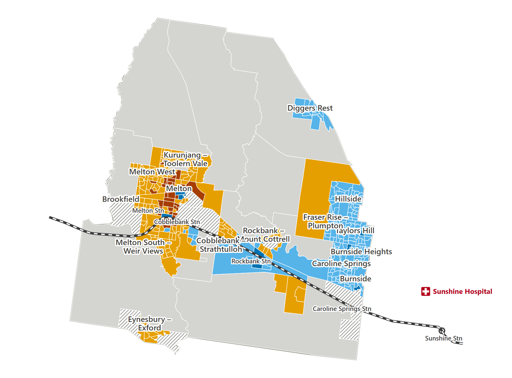
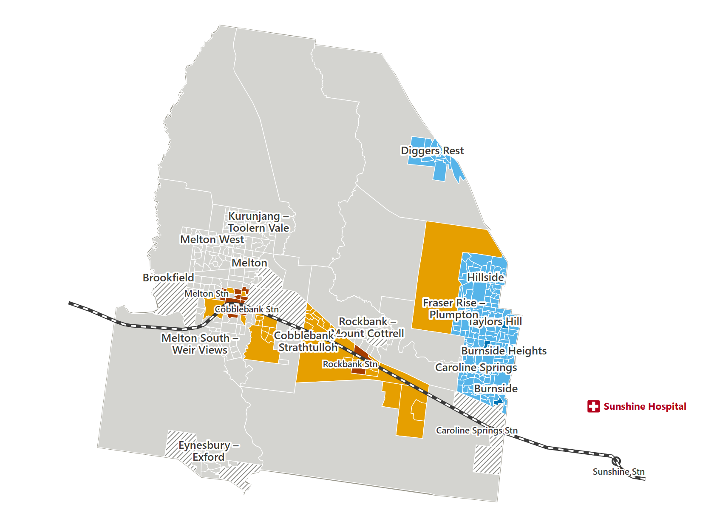

Can Melton residents without a car get to hospital and home again?
- 31 priority areas (long trip and many homes without a car)
- about 510 homes without a car in those areas
- 168 minutes: the usual round trip from Melton to Sunshine Hospital and back
We looked at the trip from every part of the City of Melton to Sunshine Hospital by bus and train, using the Sept 2026 timetable. The trip must work both ways on the same day. Then we tested four changes to see which one helps the most people.
Leaving hospital at 6 pm
-
6 pm leaving hospital
On the Sept 2026 timetable
31 priority areas. A priority area has a long trip to hospital AND many homes without a car.

Swipe sideways to see the whole map.
- Priority: long trip AND many homes without a car
- Long trip, fewer homes without a car
- Shorter trip, many homes without a car
- Shorter trip, fewer homes without a car
- No full round trip by public transport
- Not enough data (too few homes to measure)
The Sept 2026 timetable, leaving hospital at 6 pm. Open full size -
6 pm leaving hospital
More frequent buses
One extra bus trip halfway between each pair of existing trips.
3 areas are no longer priority areas, with about 90 homes without a car. The improvement is lost if you miss one connection.

Swipe sideways to see the whole map.
- Priority: long trip AND many homes without a car
- Long trip, fewer homes without a car
- Shorter trip, many homes without a car
- Shorter trip, fewer homes without a car
- No longer a priority area
- No full round trip by public transport
- Not enough data (too few homes to measure)
More frequent buses, leaving hospital at 6 pm. Open full size -
6 pm leaving hospital
Bus–train timing
Bus trip times shifted to meet V/Line trains.
No area stops being a priority area. It helps some trips and hurts others: 68 round trips get shorter and 77 get longer.

Swipe sideways to see the whole map.
- Priority: long trip AND many homes without a car
- Long trip, fewer homes without a car
- Shorter trip, many homes without a car
- Shorter trip, fewer homes without a car
- No full round trip by public transport
- Not enough data (too few homes to measure)
Bus–train timing, leaving hospital at 6 pm. No area stops being a priority area, so none is circled. Open full size -
6 pm leaving hospital
Cobblebank site
The Cobblebank site is tested with the Sept 2026 buses and trains, not a future timetable.
30 areas are no longer priority areas, with about 500 homes without a car.

Swipe sideways to see the whole map.
- Priority: long trip AND many homes without a car
- Long trip, fewer homes without a car
- Shorter trip, many homes without a car
- Shorter trip, fewer homes without a car
- No longer a priority area
- No full round trip by public transport
- Not enough data (too few homes to measure)
Cobblebank site, leaving hospital at 6 pm. Open full size


Leaving hospital at 8:30 pm
-
8:30 pm leaving hospital
On the Sept 2026 timetable
At 8:30 pm, 180 areas have no trip home. This includes 21 of the 31 priority areas. Almost all of them are grey on this map: no full round trip by public transport.

Swipe sideways to see the whole map.
- Priority: long trip AND many homes without a car
- Long trip, fewer homes without a car
- Shorter trip, many homes without a car
- Shorter trip, fewer homes without a car
- No full round trip by public transport
- Not enough data (too few homes to measure)
The Sept 2026 timetable, leaving hospital at 8:30 pm. -
8:30 pm leaving hospital
Later buses
Extra late buses on existing routes, leaving as late as 10 pm.
From here, the 8:30 pm maps use a different key: they compare each area with the Sept 2026 timetable. Grey still means no trip home.
45 areas get a trip home they do not have on the Sept 2026 timetable, shown in dark blue. 19 of them are priority areas, with about 290 homes without a car. This improvement depends on a single bus trip.

Swipe sideways to see the whole map.
- Gets a trip home (has none on the Sept 2026 timetable)
- Trip home both times
- No trip home either way
- Outlined: priority area at 6 pm
Later buses, leaving hospital at 8:30 pm. Open full size -
8:30 pm leaving hospital
Cobblebank site
168 areas get a trip home they do not have on the Sept 2026 timetable, and 41 lose their trip home. With the Cobblebank site, the trip home starts at Cobblebank instead of Sunshine Hospital.

Swipe sideways to see the whole map.
- Gets a trip home (has none on the Sept 2026 timetable)
- Loses its trip home
- Trip home both times
- No trip home either way
- Outlined: priority area at 6 pm
Cobblebank site, leaving hospital at 8:30 pm. Open full size


Hospital location matters most, but the improvements are easy to lose
Numbers of homes are rounded to the nearest 10.
-
6 pm leaving hospital
The Cobblebank site helps most.
30 areas are no longer priority areas, with about 500 homes without a car.
Late at night, many trips get longer.
Cobblebank site -
6 pm leaving hospital
More frequent buses help a little.
3 areas are no longer priority areas, with about 90 homes without a car.
More frequent buses -
8:30 pm leaving hospital
Later buses give a trip home.
19 priority areas get a trip home, with about 290 homes without a car. All of them use one extra bus.
Later buses
What this means
In our tests, a hospital site closer to Melton helped the most areas at 6 pm. But late at night, many trips from that site get longer.
Changes to bus services can still help. One extra late bus gives 19 priority areas a way home after an evening visit.
These improvements are easy to lose. The late-bus improvement depends on that one bus. The improvement from more frequent buses is lost if a traveller misses one connection.
So better hospital access needs more than extra services. People also need connections they can rely on, all the way home.